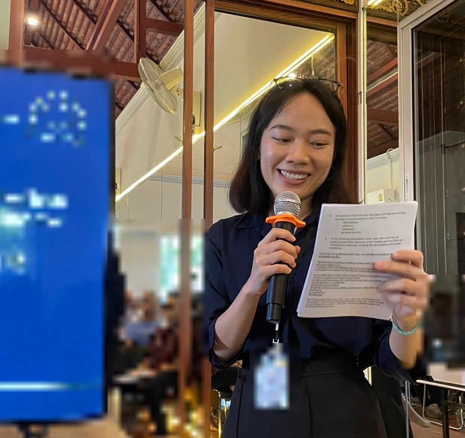

I'm Patsiri, a project manager specialising in healthcare quality improvement, accreditation implementation, and complex cross-functional delivery.
I led a first-time CARF implementation for a luxury rehabilitation and wellness centre in Asia, coordinating executive leadership and eight operational departments through governance improvement, policy development, practical implementation, evidence preparation, and survey readiness. The organisation achieved a three-year CARF accreditation term.
That experience shaped the way I work. Accreditation should reflect how an organisation genuinely operates — not become a temporary documentation exercise created for survey week. I bring the structure, ownership, risk management, and implementation discipline needed to embed standards into everyday operations and sustain improvements beyond the survey.
My role is not to replace your clinical expertise or guarantee an accreditation outcome. It is to manage the implementation — aligning leadership, departments, plans, evidence, and accountability from standards through survey readiness.

“Accreditation isn't paperwork — it's an operating standard. My job is to make it stick, so the survey is just the confirmation.”— Patsiri
BEACON PM is an independent project management service and is not affiliated with or endorsed by CARF International. CARF accreditation decisions remain subject to CARF's independent survey and accreditation process. My services support implementation planning, project governance, documentation coordination, and organisational readiness.